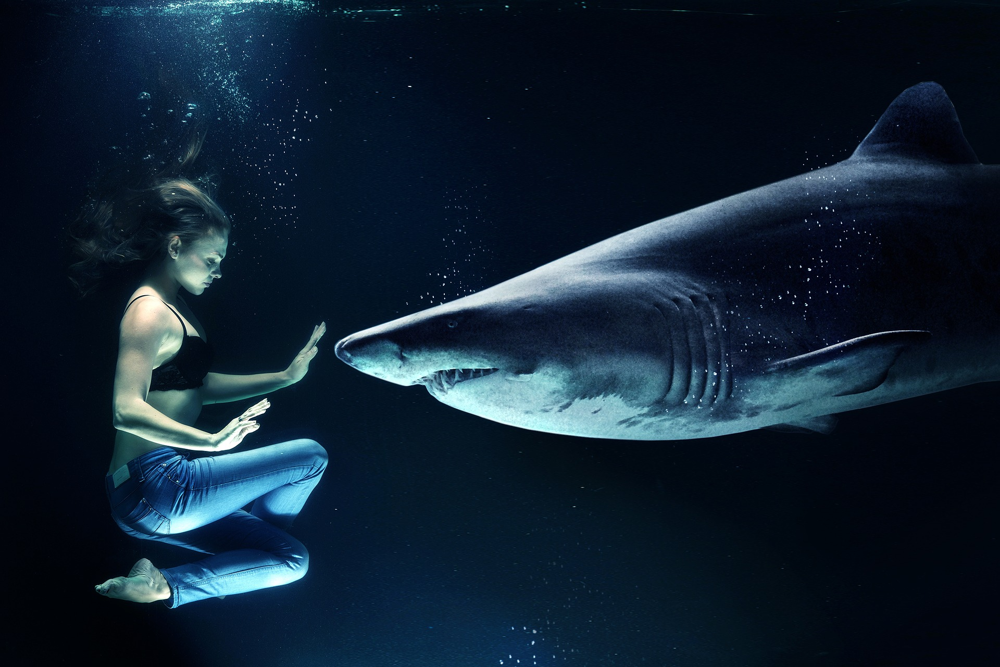
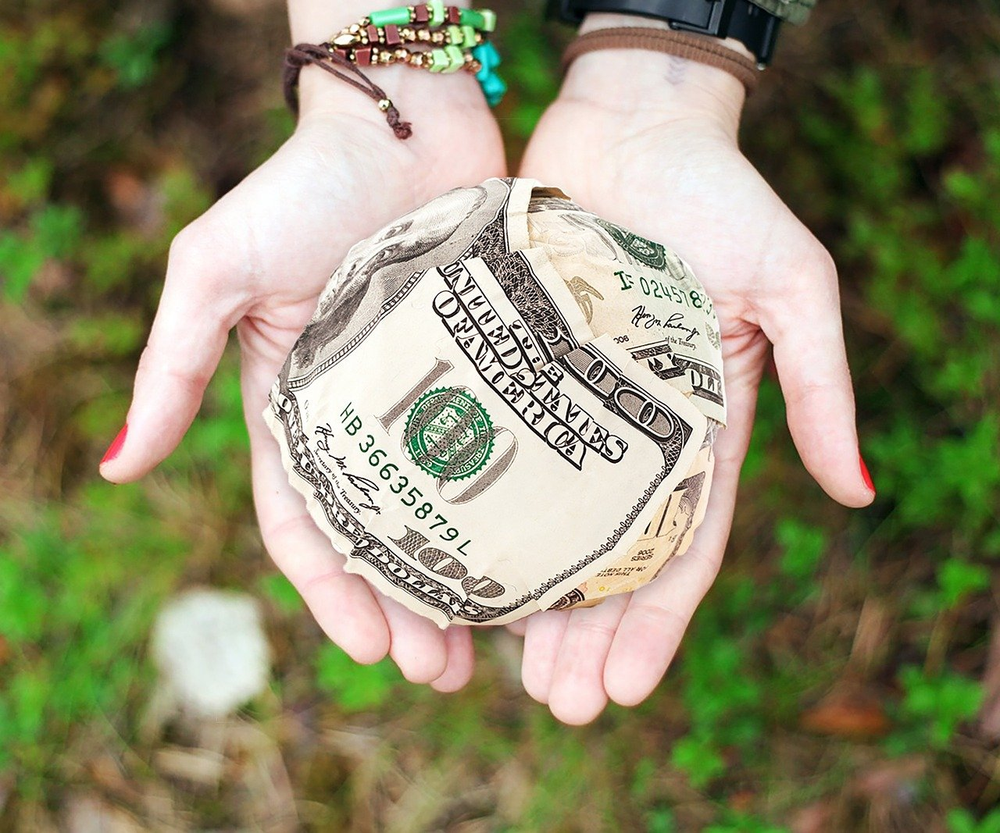
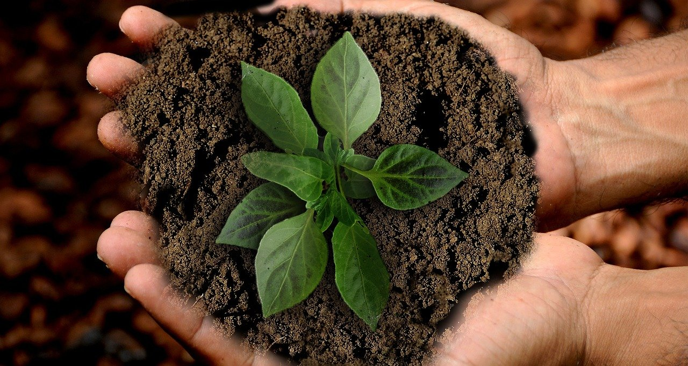

Here are ways that you can help and save endangered animals.
By donating to amazing environmental protection organizations, you are helping them achieve their goals. And their goal is to protect endangered animals and the environment.Below their is a list of organizations that you should consider donating to!
The World Wildlife Fund (WWF), Oceana, The International Rhino Fund (IRF), The Jane Goodall Institute, International Union For Conservation of Nature (IUCN), and Project AWARE Foundation.
Another great way to help solve this problem, is to volunteer! Volunteering in local or global environmental protection organizations truly makes a difference. Look at the list below and consider where you should volunteer.
EPA Volunteer Opportunities (https://engage.youth.gov/opportunities/volunteer-opportunities-epa-help-your-local-community-and-environment), Global Volunteer Opportunities (https://www.volunteerworld.com/en/volunteer-abroad/environment), International volunteering (https://www.volunteerhq.org/volunteer-abroad-projects/environment-and-conservation/), and local volunteering (https://www.volunteermatch.org/).

There are many ways that you can help protect endangered animals. You can start to lead a sustainable lifestyle where you recycle, compost, support sustainable brands, go vegetarian/vegan, conserve eneregy, and use renewable energy. All of these habits improve the environment and reduce the amount of pollution/waste produced. All of this protects animal habitats and saves lives. Below I have linked blogs and websites that help you lead a sustainable lifestyle
Sustainably Chic (https://www.sustainably-chic.com/), Eco Warrior Princess (https://ecowarriorprincess.net/), Living Green With Nikki (https://raonikita05.wixsite.com/livingr33n), Zero Waste Home(https://zerowastehome.com/), Melanin & Sustainable Style (https://melaninass.com/), and Going Zero Waste (https://www.goingzerowaste.com/).
